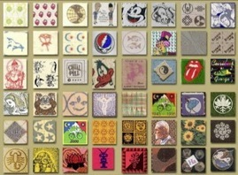
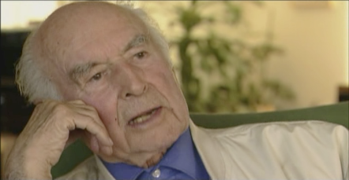
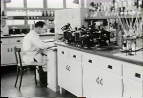
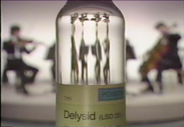
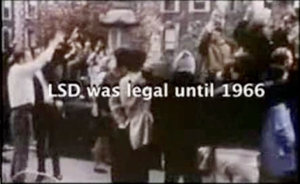
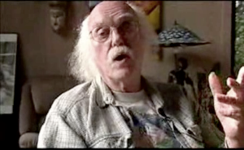
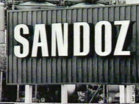
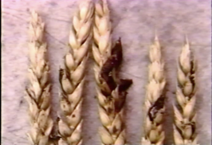
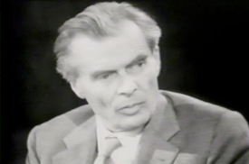

Wieczór Alberta Hofmanna, odkrywcy LSD
TAROT

FILM
107 Urodziny Hansa Bellmera w Katowicach
WYKŁADY
Podczas spotkania bez tabu i cenzury omawiano realny wpływ odkrycia Alberta Hoffmana na współczesną kulturę, konsekwencje tego wynalazku dla przemian obyczajowych i światopoglądowych, a także zagrożenia i historyczne kwasowe iluminacje. Ten niezwykły wieczór tematyczny przyciągął do Pracowni liczną grupę zainteresowanych.

Spotkanie poprowadził Andrzej Urbanowicz. Gościem specjalnym był Krzysztof Lewandowski, tłumacz i wydawca książki Alberta Hoffmana “LSD. Moje trudne dziecko”, założyciel alternatywnego portalu “Święto Radości”, hipis, ekonomista, autor projektu społecznościowego Czysta Kraina - czystakraina.pl .
Albert Hofmann, fot. z filmu “Hofmann’s Potion” 2002
Kadry z filmów. Od góry: plansza z filmu “Power and Control”, Aldous Huxley, reklama firmy Sandoz - najwiekszego producenta kwasu lizergidowego, buteleczka Delysidu, Ram Dass - legenda kontrkultury, współpracownik Leary’ego, kłosy pokryte sporyszem.
W ramach pokazów filmowych przygotowanych przez Jana Przyłuskiego zaprezentowaliśmy fragmenty dokumentów o Hoffmanie i odkryciu kwasu lizergidowego.

W programie m.in.
test działania LSD przeprowadzonego przez wojsko angielskie na swoich żołnierzach podczas ćwiczeń
“Beyond Within. Part 1: The Rise of LSD. Part 2. The Fall of LSD ”, prawdopodobnie najbardziej bezpośrednia wypowiedź Hofmanna i najbardziej kompetentny film z jego udziałem, a także najzabawniejszą sceną wizualizacji pierwszej, nieplanowanej “jazdy” Hoffmana, która zaczęła się podczas najsłynniejszego w historii powrotu do domu na rowerze
“Hofman’s Potion”, reż. Connie Littlefield, z udziałem Hofmanna, Aldousa Huxleya, Humphrey Osmonda - pierwszego psychiatry pracującego z LSD, Ram Dassa, czy Timothy Leary’ego.

“Hooked. Illegal Drugs and How They Got That Way”. Odcinek 3. “LSD, Extasy and the Raves”, sensacyjny program tv przygotowany przez History Channel
“Getting High. The History of LSD”, z telewizyjnej serii “History’s Mysteries” również przygotowany przez History Channel
“Syd Barrets’s LSD Summer Trip”, wczesna filmowa impresja na temat doświadczenia psychodelicznego
“Power and Control. LSD in the Sixties”, reż. Aron Ranen; przeszukiwanie zakamarków historii poprzez spotkania z ludźmi, którzy byli najbliżej badań nad LSD w Stanach Zjednoczonych

